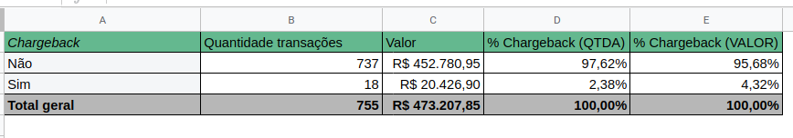
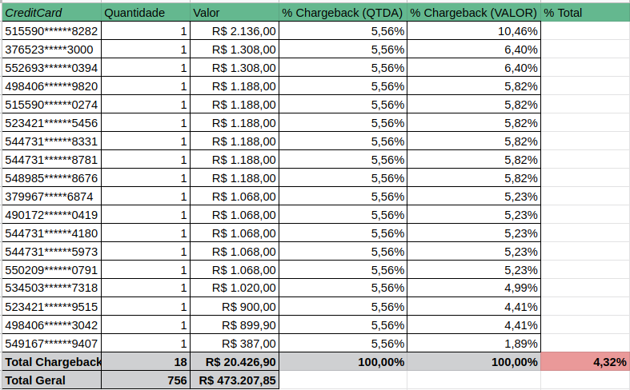
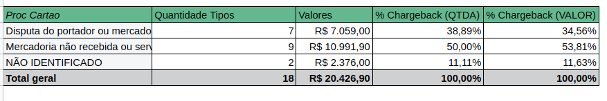
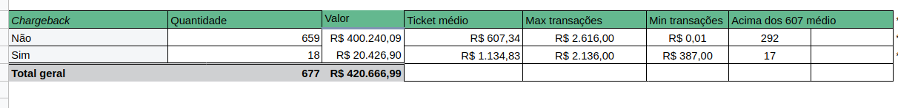

Case Stone
A partir de agora você é um analista do nosso time de Monitoramento e Prevenção! Está preparado?
Você está analisando um dos nossos clientes, S.A ACADEMIA, foi credenciado pelo canal POLO em 05-07- 2017.
O mesmo apresenta um ticket médio baixo. Dado que todas as transações são realizadas na modalidade de
cartão presente (no terminal), o estabelecimento possui serviço de antecipação de 100% automática e diária.
Segue um amostral do estabelecimento comercial (Em anexo)
Seguindo planilhas e PDF enviados por email
Planilha enviada unificada Spreadsheets
PDF usado PDF
1. Qual o risco atrelado ao modelo de negócio e características transacionais do estabelecimento?
O principal risco identificado está relacionado às disputas de portadores de cartões em relação a mercadorias não recebidas.
Além disso, é possível que o modelo de negócio da Academia apresente vulnerabilidades em relação às transações com cartão de crédito.
- - 18 casos de chargebacks em 755 transactions;
- - Representatividade de 2,38% de fraudes em relação ao total de casos;
- - Os Chargebacks começam em 13/07/2018 até 04/01/2019
- - Chargebacks somente na modalidade Crédito;
- - Baixo ticket médio e as transações são de cartão presente (no terminal);
- - Possuir serviço de antecipação de 100% automática e diária;
- - A falta de histórico de análises anteriores do estabelecimento pode indicar um risco desconhecido;
- - Sistema de back end falho, casos presos em fila do servidor;
- - Foram casos avaliados manualmente, pois foi inserido tipo e descriptor após reclamação do cliente;
- - Existia uma regra antiga que aprovou as transações, e depois foi criado uma regra que identificou os casos retroativos;
Suposições do Maturity;
*Representatividade*
*Representatividade*


*Ticket médio só é baixo porque a Academia tem transactions baixas;
*45% das transações são acima do ticket médio Aprovadas;
*Geraria alerta se houvessem poucas transactions baixa, porém quase 50% dos tickets é acima da média;